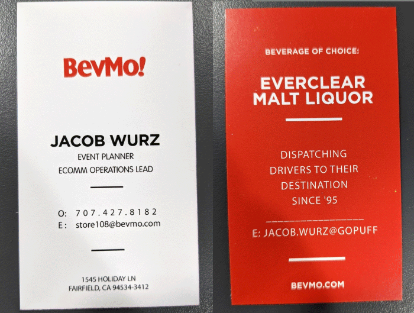
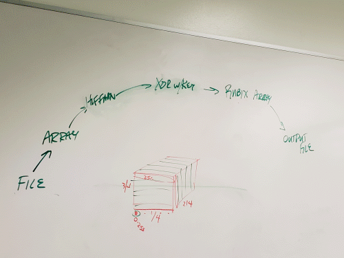

BevMo / Gopuff
Daily Closing Notes
I worked at BevMo from 8/25/16 to 10/7/21.
I flexed my college skills at BevMo through my closing notes.
And these closing notes are proof of my work ethic and claims on my resume.
I would come in for a 7p-3a and be given tasks by my manager.
And I would complete them.
And I had opportunities to use my degree through analyzing data and spreadsheets,
looking at employees Pack Times for orders and rearranging the store to optimize times.
I also had to figure out solutions to improve customer "Unhappiness".
I also acted as dispatch for our 1099 drivers, guiding them to their destination through calling them or through Slack.
And my inexperience in retail management was an advantage in preventing misclassification
of our contracted drivers.
I also had to create a loyal driver base from scratch so we
could deliver orders all the way to 3am.
I also helped managed scheduling for a little bit.
I also worked with our receiver in managing inventory, and
learned from her about invoices, ordering product, and POs.
In my last year at BevMo I was often training new supervisors,
setting them up with supervisor accounts, and passing on all I knew.
And my business card.

Awards Received at BevMo
Cheers awards are handed out by Store Managers & Field Leaders - similar to employee of the month awards.
CSUS
My Degree
Senior Project
My senior project involved working with 5 other colleagues over a course of a year.
One of our group members, Jared, knew our client by asking him to coffee after our client
gave a speech at CSUS. This led to him giving us a project on private encryption.
Our client wanted to be able to hide any type of file through an algorithm he designed by masking it as a ".khn" file.
His algorithm involved taking a file into an array of bits, shifting the bits by XOR'ing them with a key,
then putting them into his own personal algorithm, and outputting it as a .khn file.

For decrypting this was the same process but backwards. And we had a limit of 16mb on the file.
We all worked on all parts of this project but my main focus was getting
the encryption and decryption working.
And I did not own a MAC so working with team members who had MACs after COVID hit was a challenge
to keep our project cross-platform.

Ofcourse this was not secure enough to be practical - but it was a fun senior project.
And interesting when we realized we could hide images, audio, pdf's, and even videos with this tool.
This is an old animation with broken code - but the finished project looked the same.
Our client wanted it all done through command line.

Our project website is listed on our team member Cassandra's Github here:
https://pizarroll.github.io/QueueUnderflow/
Awards Received at CSUS
I was on the Dean's Honor Roll every single semester.
Tri-Tech Skills Center
Overview
Tri-Tech Skills Center is a trade school for high school students where I learned computer science.
This is on my resume because I spent 30-40+ hours each week
working on projects for this program. I was highly passionate about this program.
We also did a robotics competition for two years in a row where I learned PBASIC to control these little robots.
Instead of describing each project I did at Tri-Tech, my awards will speak for why
I believe this is noteworthy of being on my portfolio;
however, there are some interesting problem solving skills that were involved
in each project such as saving and opening files over a network drive to create a multiplayer
video game, and I managed 3 other team members over a course of 5 months to create 1 huge project.
Awards for Tri-Tech Skills Center